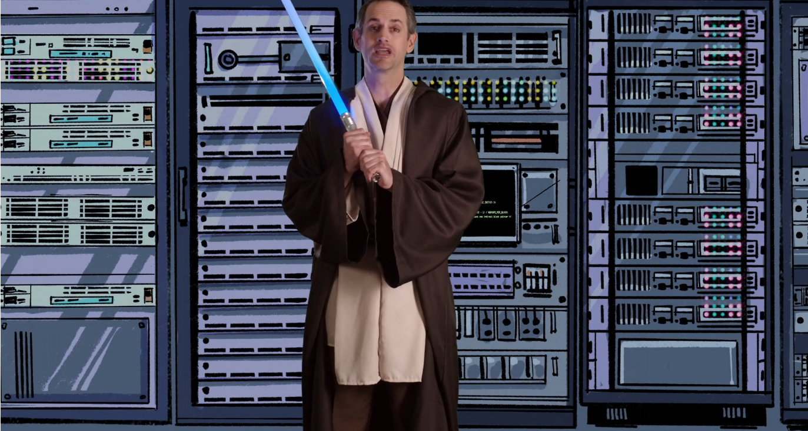

01 - Observability Instrumentation
Introduction
Complete course:

When your teacher is a Jedi, you know you chose the course wisely Objectives:
- Understand basic theory underlying observability
- What type of data can be used for observability
Episodes
Episode 3 - Science vs Engineering, Fight!
Observability concepts. Basic theory underlying observability makes its application more effective.
Observability isn’t magic, and the data is procured in very specific ways by very specific tools. How that data is measured, moved, stored, analyzed and consumed is very specific to an organization’s needs.
To handle this, there are a few common concepts that helps understand as all observability tools and gadgets are built upon these.
- Observation: Heart of observability, continually taking measurements of different kinds.
Data sampled at a given time.
At a minimum, they consist of a timestamp and some type of data to describe the status of the service.
There are a lot of different types of observations. A few examples:
- A system metric
- An app log line
- A network trace
- A stack dump
- A build status
- An audit result
- A picture of a server rack
- A pithy tweet
Metrics: A metric is basically a value measured at a given time.
- A sample is a single measurement point
- A series is a type of measurement taken over time, also called time series data
- Metadata like tags may also be added to metrics to add context beyond the time serie
Observation example - Time series with metadata regarding Kubernetes cluster and Pod - High cardinality data gives you more granularity when analysing root causes, but can cause an explosion in the amount of data you have to handle
- Each additional dimension added causes a geometric increase in the amount of data in a given series
Time Skew: timestamps are critical because they allow us to line up events for correlation, but clock skew can cause variations in times reported
- For high-resolution data, clock sync is mandatory
- One of the worst cases of clock skew is when data comes in from different timezones but weren’t processed with awareness of their timezone
Observations like log events and code trigger traces happen in real time, but metric observations aren’t trully continuous
- Metrics are sampled along a specific interval time that gives you a sampling frequency, or what we call a resolution
- Resolution can come in anywhere, from second to five minutes depending on its source
Tools can skew the actual resolution of the retrieved data samples by:
- Downsampling: ignore a fraction of the samples to reduce the data handling cost (completely remove resolution)
- Aggregation: average of data over time and deletion of source data to free data storage after some days (you shouldn’t need to keep second-resolution data after several times if no issue has appeared)
- Interpolation: with data aggregation, the interpolation shows a rough estimation of values between aggregated values (straight line between two points). Interpolation won’t tell the real value of a metric at a given time if only aggregated data is provided (you can’t spell LINE without LIE)
There’s value in all these data manipulation. You need to know when they’re being aplied (downsampled, aggregated, interpolated) in order to safely use these observations
Delay: While some tools promise a 1-sec resolution, they may only report data every one or 5 minutes in a single payload. This means you get high-resolution but with some delay
- This concept is known as metric latency, delay or lag
- Example of metric latency:
- 5:00:00 - Interesting event occurs
- 5:05:00 - Agent reports event bundle containing events from the last 5 minutes
- 5:15:00 - Collector ingests all bundles every 10 minutes into pipeline
- 5:20:00 - Indexer finishes indexing last collector data and you see the event
- In this last example, 20 minutes have passed since we’re aware of some event that has happened in the service. Data processing time must always be taken into account!
Metric retention: it referes to how long metric data is kept for analysis
- Aggregates may be kept longer than the underlying samples
- Know how your tools handle this - data costs money to keep forever but you can’t do compares over time if the data’s gone
- Understanding your retention date is a must!
- A system metric (Sample)
- The status of a build (Metadata)
- A target level of reliability for a service(Threshold) - A line in an application log (Sammple)
An observation is simply a measurement, and anything that can be measured therefore is able to be observed.
A threshold is not a measurement, is an opinionated value that defines ranges of behaviour
- Downsampling
- Aggregation
- Interpolation
None of them are bad, you just have to decide on what scenarios that method is good enought to get some answers to your questions.
Clock skew can cause a variation in the reported timestamp for a given metric. If data is timezone-aware and it isn’t correctly processed, then we are dealing with a time-sync issue that is quite difficult to handle
Episode 4 - Observability Instrumentation
What kinds of observability data can you get, and what tools do you need to get it? Are we only the sum of our parts, or something greater?
There are many types of tooling that instrument various parts of your system in different ways.
Instrumentation can either be active or passive. In the real world there’s usually some overhead during collection. The idea of instrumentation with zero-impact is science-fiction.
Different data collection methods give you different outcomes:
- Synthetic monitoring is performed by hitting a URL to verify it works
- Examples of tools: Solarwinds pingdom and UptimeRobot
- It queries your system on a regular cadence from specific locations.
- This mean data is more reliable for correlation and deviation, and therefore alerting, because the tools query your system whether you have active users or not
- Provides more actionable feedback
- Real-user monitoring: also known as end-user experience monitoring, measures latency and errors from end-user via a browser, mobile device or network
- Examples of tools: Raygun
- It gives more of a sense of an actual user experience
They each have their own latencies and methods for collecting said data.
Other instrumentation methods:
- Logs: generally admitted from services and applications automatically with minimum to no effort
- ELK stack: elasticsearch + Logstash + kibana
- They often convey more info than metrics
- Able to tell very detailed things like the number of connection attempts from a user
- Distributed tracing: code or network-level instrumentation that wraps your application code, an external application calls in order to help you correlate them thorough different parts of your system
- Calls to a modern service can go to many different components and tiers, and tracing can help you identify where your performance or reliability issues are.
- Tools: Zipkin and Jaeger
- You can get a lot of info from tracing but this poses challenges when it comes to being able to analyse it. Also, it may take a considerable amount of time and money to implement it in your application
- Metric monitoring: it dates back to SNMP polling tools like Cacti or NagIOs that focus on network device and server monitoring
- Application performance management tools (APM): expensive commercial platforms that combine distributed tracing and continuous profiling of your applications
- Makes it easy to look at the performance of area application base in system (?) at a glance
There’s no such thing as zero-impact instrumentation. Though there are very lightweight libraries and collections available, consider the impact of each additional tool (and the total impact of all tools) that you add to your observability solution
Real User Monitoring (RUM) tools and Synthetic monitoring tools are complementary as each they have their own latencies and methods to collect data. It’s up to you to determine when and where best to use these tools.
Elasticsearch + Logstash + Kibana (ELK Stack) is a good first try on log analysis tools. If it doesn’t suit your needs, then go for other alternatives.